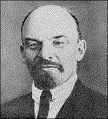

V. I. LENINTHE STATE
A Lecture Delivered |
 |
page 1
COMRADES, according to the plan adopted by you and conveyed to me, the subject of today's talk is the state. I do not know how familiar you are already with this subject. If I am not mistaken your courses have only just begun and this is the first time you will be approaching this subject systematically. If that is so, then it may very well be that in the first lecture on this difficult subject I may not succeed in making my exposition sufficiently clear and comprehensible to many of my listeners. And if this should prove to be the case, I would request you not to be perturbed by the fact, because the question of the state is a most complex and difficult one, perhaps one that more than any other has been confused by bourgeois scholars, writers and philosophers. It should not therefore be expected that a clear understanding of this subject can be obtained from one brief talk, at a first sitting. After the first talk on this subject you should make a note of the passages which you have not understood or which are not clear to you, and return to them a second, a third and a fourth time, so that what you have not understood may be further supplemented and elucidated afterwards, both by reading and by various lectures and talks. I hope that we may manage to meet once again and that then we shall be able to exchange opinions
page 2
on all supplementary questions and to see what has remained most unclear. I also hope that in addition to talks and lectures you will devote some time to reading at least some of the most important works of Marx and Engels. I have no doubt that these most important works are to be found in the catalogues of literature and in the handbooks which are available in your library for the pupils of the Soviet and Party school; and although, again, some of you may at first be dismayed by the difficulty of the exposition, I must again warn you that you should not be perturbed by this fact and that what is unclear at a first reading will become clear at a second reading, or when you subsequently approach the question from a somewhat different angle. For I once more repeat that the question is so complex and has been so confused by bourgeois scholars and writers that anybody who desires to study this question seriously and to master it independently must attack it several times, return to it again and again and consider the question from various angles in order to attain a clear and firm understanding of it. And it will be all the easier to return to this question because it is such a fundamental, such a basic question of all politics, and because not only in such stormy and revolutionary times as the present, but even in the most peaceful times, you will come across this question every day in any newspaper in connection with any economic or political question. Every day, in one connection or another, you will be returning to this question: what is the state, what is its nature, what is its significance and what is the attitude of our party, the party that is fighting for the overthrow of capitalism, the Communist Party -- what is its attitude to the state? And the chief thing is that as a result of your reading, as a result of the talks and
page 3
lectures you will hear on the state, you should acquire the ability to approach this question independently, since you will be meeting this question on the most diverse occasions, in connection with the most trifling questions, in the most unexpected conjunctures, and in discussions and disputes with opponents. Only when you learn to find your way about independently in this question may you consider yourself sufficiently confirmed in your convictions and able with sufficient success to defend them against anybody and at any time.
After these brief remarks, I shall proceed to deal with the question itself -- what is the state, how did it arise and what fundamentally should be the attitude to the state of the party of the working class, which is fighting for the complete overthrow of capitalism -- the Communist Party?
I have already said that you will scarcely find another question which has been so confused, deliberately and undeliberately, by representatives of bourgeois science, philosophy, jurisprudence, political economy and journalism, as the question of the state. To this day this question is vety often confused with religious questions; not only representatives of religious doctrines (it is quite natural to expect it of them), but even people who consider themselves free from religious prejudice, very often confuse the specific question of the state with questions of religion and endeavour to build up a doctrine -- very often a complex one, with an ideological, philosophical approach and argumentation -- which claims that the state is something divine, something super natural, that it is a certain force, by virtue of which mankind has lived, and which confers on people, or which can confer on people, which brings with it, something that is not of man, but is given him from without -- that it is a force
page 4
of divine origin. And it must be said that this doctrine is so closely bound up with the interests of the exploiting classes -- the landlords and the capitalists -- so serves their interests, has so deeply permeated all the customs, views and science of the gentlemen who represent the bourgeoisie, that you will meet with relics of it on every hand, even in the view of the state held by the Mensheviks and Socialist Revolutionaries, who reject with disgust the suggestion that they are under the sway of religious prejudices and are convinced that they can regard the state with sober eyes. This question has been so confused and complicated because it affects the interests of the ruling classes more than any other (yielding in this respect only to the foundations of economic science). The doctrine of the state serves as a justification of social privilege, a justification of the existence of exploitation, a justification of the existence of capitalism -- and that why it would be the greatest mistake to expect impartiality on this question, to approach this question in the belief that people who claim to be scientific can give you a purely scientific view on the subject. In the question of the state, in the doctrine of the state, in the theory of the state, when you have become familiar with this question and have gone into it sufficiently deeply, you will always discern the mutual struggle of different classes, a struggle which is reflected or expressed in a conflict of views on the state, in the estimate of the role and significance of the state. To approach this question as scientifically as possible we must cast at least a fleeting glance back on the history of the rise and development of the state. The most reliable thing in a question of social science, and one that is most necessary in order really to acquire the habit of approaching this question correctly and not allowing oneself to get lost
page 5
in the mass of detail or in the immense variety of conflicting opinions -- the most important thing in order to approach this question scientifically is not to forget the underlying historical connection, to examine every question from the standpoint of how the given phenomenon arose in history and what principal stages this phenomenon passed through in its development, and, from the standpoint of its development, to examine what the given thing has become today.
I hope that in connection with the question of the state you will acquaint yourselves with Engels' book, The Origin of the Family, Private Property and the State. This is one of the fundamental works of modern Socialism, every sentence of which can be accepted with confidence, in the assurance that it has not been said at random but is based on immense historical and political material. Undoubtedly, not all the parts of this work have been expounded in an equally popular and comprehensible way; some of them presume a reader who already possesses a certain knowledge of history and economics. But I again repeat that you should not be perturbed if on reading this work you do not understand it at once. That hardly happens with anyone. But returning to it later, when your interest has been aroused, you will succeed in understanding the greater part of it, if not the whole of it. I mention this book because it gives the correct approach to the question in the sense mentioned. It begins with a historical sketch of the origin of the state.
In order to approach this question correctly, as every other question -- for example, the question of the origin of capitalism, the exploitation of man by man, Socialism, how Socialism arose, what conditions gave rise to it -- every such question can be approached soundly and confidently only if
page 6
we cast a glance back on the history of its development as a whole. In connection with this question it should first of all be noted that the state has not always existed. There was a time when there was no state. It appears wherever and whenever a division of society into classes appears whenever exploiters and exploited appear.
Before the first form of exploitation of man by man arose, the first form of division into classes -- slaveowners and slaves -- there existed the patriarchal family, or, as it is sometimes called, the clan family. (Clan -- generation, kinship, when people lived together according to kinship ancd generation.) Fairly definite traces of these primitive times have survived in the life of many primitive peoples; and if you take any work whatsoever on primitive culture, you will always come across more or less definite descriptions, in dications and recollections of the fact that there was a time, more or less similar to primitive communism, when the division of society into slaveowners and slaves did not exist. And in those times there was no state, no special apparatus for the systematic application of force and the subjugation of people by force. It is such an apparatus that is called the state.
In primitive society, when people lived in small family groups and were still at the lowest stages of development in a condition approximating to savagery -- an epoch from which modern, civilized human society is separated by several thousands of years -- there were yet no signs of the existence of a state. We find the predominance of custom, authority, respect, the power enjoyed by the elders of the clan; we find this power sometimes accorded to women -- the position of women then was not like the downtrodden and oppressed condition of women today -- but nowhere do we find a
page 7
special category of people who are set apart to rule others and, for the sake and purpose of rule, systematically and permanently to wield a certain apparatus of coercion, an apparatus of violence, such as is represented at the present time, as you all realize, by the armed detachments of troops, the prisons and the other means of subjugating the will of others by force -- all that which constitutes the essence of the state.
If we abstract ourselves from the so-called religious teachings, subtleties, philosophical arguments and the various opinions advanced by bourgeois scholars, if we abstract ourselves from these and try to get at the real essence of the matter, we shall find that the state really does amount to such an apparatus of rule separated out from human society. When there appears such a special group of men who are occupied with ruling and nothing else, and who in order to rule need a special apparatus of coercion and of subjugating the will of others by force -- prisons, special detachments of men, armies, etc. -- then there appears the state.
But there was a time when there was no state, when general ties, society itself, discipline and the ordering of work were maintained by force of custom and tradition, or by the authority or the respect enjoyed by the elders of the clan or by women -- who in those times not only frequently enjoyed equal status with men, but not infrequently enjoyed even a higher status -- and when there was no special category of persons, specialists in ruling. History shows that the state as a special apparatus for coercing people arose only wherever and whenever there appeared a division of society into classes, that is, a division into groups of people some
page 8
of whom are permanently in a position to appropriate the labour of others, where some people exploit others.
And this division of society into classes must always be clearly borne in mind as a fundamental fact of history. The development of all human societies for thousands of years, in all countries without exception, reveals a general con formity to law, a regularity and consistency in this develop ment; so that at first we had a society without classes -- the original patriarchal, primitive society, in which there were no aristocrats; then we had a society based on slavery -- a slaveowning society. The whole of modern civilized Europe has passed through this stage -- slavery ruled supreme two thousand years ago. The vast majority of peoples of the other parts of the world also passed through this stage. Among the less developed peoples traces of slavery survive to this day; you will find the institution of slavery in Africa, for example, at the present time. Slaveowners and slaves were the first important class divisions. The former group not only owned all the means of production -- the land and the implements, however primitive they may have been in those times -- but also owned people. This group was known as slaveowners, while those who laboured and supplied labour for others were known as slaves.
This form was followed in history by another -- feudalism. In the great majority of countries slavery -- in the course of its development evolved into serfdom. The fundamental division of society was now into feudal landlords and peas ant serfs. The form of relations between people changed. The slaveowners had regarded the slaves as their property; the law had confirmed this view and regarded the slave as a chattel completely owned by the slaveowner. As far as the peasant serf was concerned, class oppression and dependence
page 9
remained, but it was not considered that the feudal landlord owned the peasants as chattels, but that he was only entitled to their labour and to compel them to perform certain services. In practice, as you know, serfdom, especially in Russia, where it survived longest of all and assumed the grossest forms, in no way differed from slavery.
Further, with the development of trade, the appearance of the world market and the development of money circulation, a new class arose within feudal society -- the capitalist class. From the commodity, the exchange of commodities and the rise of the power of money, there arose the power of capital. During the eighteenth century -- or rather, from the end of the eighteenth century and during the nineteenth century -- revolutions took place all over the world. Feudalism was eliminated in all the countries of Western Europe. This took place latest of all in Russia. In I861 a radical change took place in Russia as well, as a consequence of which one form of society was replaced by another -- feudalism was replaced by capitalism, under which division into classes remained, as well as various traces and relics of serfdom, but in which the clivision into classes fundamentally assumed a new form.
The owners of capital, the owners of the land, the owners of the mills and factories in all capitalist countries constituted and still constitute an insignificant minority of the population who have complete command of the labour of the whole people, and, consequently, command, oppress and exploit the whole mass of labourers, the majority of whom are pro letarians, wage workers, that procure their livelihood in the process of production only by the sale of their own worker's hands, their labour power. With the transition to capitalism, the peasants, who were already disunited and downtrodden
page 10
in feudal times, were converted partly (the majority) into proletarians, and partly (the minority) into wealthy peasants who themselves hired workers and who constituted a rural bourgeoisie.
This fundamental fact -- the transition of society from primitive forms of slavery to serfdom and finally to capitalism -- you must always bear in mind, for only by remem bering this fundamental fact, only by inserting all political doctrines into this fundamental framework will you be able properly to appraise these doctrines and understand what they refer to; for each of these great periods in the history of mankind -- slaveowning, feudal and capitalist -- embraces scores and hundreds of centuries and presents such a mass of political forms, such a variety of political doctrines, opinions and revolutions, that this extreme diversity and im mense variety can be understood -- especially in connection with the political, philosophical and other doctrines of bourgeois scholars and politicians -- only by firmly holding, as to a guiding thread, to this division of society into classes, this change in the forms of class rule, and from this standpoint examining all social questions -- economic, political, spiritual, religious, etc.
If you examine the state from the standpoint of this fundamental division, you will find that before the division of society into classes, as I have already said, no state existed. But as the social division into classes arose and took firm root, as class society arose, the state also arose and took firm root. The history of mankind knows scores and hundreds of countries that have passed through or are still passing through slavery, feudalism and capitalism. In each of these countries, despite the immense historical changes that have taken place, despite all the political vicissitudes and all the
page 11
revolutions associated with this development of mankind, in the transition from slavery through feudalism to capitalism and to the present world -- wide struggle against capitalism, you will always discern the rise of the state. It has always been a certain apparatus which separated out from society and consisted of a group of people engaged solely, or almost solely, or mainly, in ruling. People are divided into ruled, and into specialists in ruling, those who rise above society and are called rulers, representatives of the state. This apparatus, this group of people who rule others, always takes possession of a certain apparatus of coercion, of physical force, irrespective of whether this violence over people is expressed in the primitive club, or, in the epoch of slavery, in more perfected types of weapons, or in the firearms which appeared in the Middle Ages, or, finally, in modern weapons, which in the twentieth century are marvels of technique and are entirely based on the latest achievements of modern technology. The methods of violence changed, but whenever there was a state there existed in every society a group of persons who ruled, who commanded, who dominated and who in order to maintain their power possessed an apparatus of physical coercion, an apparatus of violence, with those weapons which corresponded to the technical level of the given epoch. And by examining these general phenomena, by asking ourselves why no state existed when there were no classes, when there were no exploiters and exploited, and why it arose when classes arose -- only in this way shall we find a definite answer to the question of the essence of the state and its significance.
The state is a machine for maintaining the rule of one class over another. When there were no classes in society, when, before the epoch of slavery, people laboured in primitive
page 12
conditions of greater equality, in conditions when productivity of labour was still at its lowest, and when primitive man could barely procure the wherewithal for the crudest and most primitive existence, a special group of people, specially separated off to rule and dominate over the rest of society, had not yet arisen, and could not have arisen. Only when the first form of the division of society into classes appeared, only when slavery appeared, when a certain class of people, by concentrating on the crudest forms of agricultural labour, could produce a certain surplus, when this surplus was not absolutely essential for the most wretched existence of the slave and passed into the hands of the slaveowner, when in this way the existence of this class of slaveowners took firm root -- then in order that it might take firm root it was essential that a state should appear.
And it did appear -- the slaveowning state, an apparatus which gave the slaveowners power and enabled them to rule over the slaves. Both society and the state were then much smaller than they are now, they possessed an incomparably weaker apparatus of communication -- the modern means of communication did not then exist. Mountains, rivers and seas were immeasurably greater obstacles than they are now, and the formation of the state was confined within far narrower geographical boundaries. A technically weak state apparatus served a state confined within relatively narrow houndaries and a narrow circle of action. Neverthe less, there did exist an apparatus which compelled the slaves to remain in slavery, which kept one part of society subjugated to and oppressed by another. It is impossible to compel the greater part of society to work systematically for the other part of society without a permanent apparatus of coercion. So long as there were no classes, there was no
page 13
apparatus like this. When classes appeared, everywhere and always as this division grew and took firmer hold, there also appeared a special institution -- the state. The forms of state were extremely varied. During the period of slavery we already find diverse forms of the state in the most advanced, cultured and civilized countries according to the standards of the time -- for example, in ancient Greece and Rome, which rested entirely on slavery. At that time the difference was already arising between the monarchy and the republic, between the aristocracy and the democracy. A monarchy is the power of a single person, a republic is the absence of any nonelected power; an aristocracy is the power of a relatively small minority, a democracy is the power of the people (democracy in Greek literally means the power of the people). All these differences arose in the epoch of slavery. Despite these differences, the state of the slaveowning epoch was a slaveowning state, irrespective of whether it was a monarchy or a republic, aristocratic or democratic.
In every course on the history of ancient times, when hearing a lecture on this subject you will hear about the struggle which was waged between the monarchical and republican states. But the fundamental fact is that the slaves were not regarded as human beings -- not only were they not regarded as citizens, they were not even regarded as human beings. Roman law regarded them as chattels. The law of manslaughter, not to mention the other laws for the protection of the person, did not extend to slaves. It defended only the slaveowners, who were alone recognized as citizens with full rights. But whether a monarchy was instituted or a republic, it was a monarchy of the slaveowners or a republic of the slaveowners. All rights under them
page 14
were enjoyed by the slaveowners, while the slave was a chattel in the eyes of the law; and not only could any sort of violence be perpetrated against a slave, but even the murder of a slave was not considered a crime. Slaveowning republics differed in their internal organization; there were aristocratic republics and democratic republics. In an aristocratic republic a small number of privileged persons took part in the elections; in a democratic republic everybody took part in the elections -- but again only the slaveowners, everybody except the slaves. This fundamental fact must be borne in mind, because it throws more light than any other on the question of the state and clearly demonstrates the nature of the state.
The state is a machine for the oppression of one class by another, a machine for holding in obedience to one class other, subordinated classes. There are various forms of this machine. In the slaveowning state we had a monarchy, an aristocratic republic or even a democratic republic. In fact the forms of government varied extremely, but their essence was always the same: the slaves enjoyed no rights and constituted an oppressed class; they were not regarded as human beings. We find the same thing in the feudal state.
The change in the form of exploitation transformed the slaveowning state into the feudal state. This was of immense importance. In slaveowning society the slave enjoys no rights whatever and is not regarded as a human being; in feudal society the peasant is tied to the soil. The chief token of serfdom was that the peasants (and at that time the peasants constituted the majority; there was a very poorly developed urban population) were considered attached to the land -- hence the very concept serfdom. The peasant might work a definite number of days for himself on the plot
page 15
assigned to him by the landlord; on the other days the peasant serf worked for his lord. The essence of class society remained: society was based on class exploitation. Only the landlords could enjoy full rights; the peasants had no rights at all. In practice their condition differed very little from the condition of slaves in the slaveowning state. Nevertheless a wider road was opened for their emancipation, for the emancipation of the peasants, since the peasant serf was not regarded as the direct property of the landlord. He could work part of his time on his own plot, could, so to speak, belong to himself to a certain extent; and with the wider opportunities for the development of exchange and trade relations the feudal system steadily disintegrated and the scope of emancipation of the peasantry steadily widened. Feudal society was always more complex than slave society. There was a greater element of development of trade and industry, which even in those days led to capitalism. In the Middle Ages feudalism predominated. And here too the forms of state varied, here too we find both the monarchy and the republic, although the latter was much more weakly expressed. But always the feudal landlord was regarded as the only ruler. The peasant serfs were absolutely excluded from all political rights.
Both under slavery and under the feudal system a small minority of people could not dominate over the vast majority without coercion. History is full of the constant attempts of the oppressed classes to throw off oppression. The history of slavery contains records of wars of emancipation from slavery which lasted for decades. Incidentally, the name "Spartacist" now adopted by the German Communists -- the only German party which is really fighting the yoke of capitalism -- was adopted by them because
page 16
Spartacus was one of the most prominent heroes of one of the greatest revolts of slaves, which took place about two thousand years ago. For many years the seemingly omnipotent Roman Empire, which rested entirely on slavery, experienced shocks and blows under the impact of a vast uprising of slaves who armed and united to form a vast army under the leadership of Spartacus. In the end they were de feated, captured and put to torture by the slaveowners. Such civil wars mark the whole history of the existence of class society. I have just mentioned an example of the greatest of these civil wars in the epoch of slavery. The whole epoch of feudalism is likewise marked by constant uprisings of the peasants. For example, in Germany in the Middle Ages the struggle between the two classes -- the landlords and the serfs -- assumed wide dimensions and was transformed into a civil war of the peasants against the landlords. You are all familiar with similar examples of repeated uprisings of the peasants against the feudal land lords in Russia.
In order to maintain their rule and to preserve their power, the landlords had to have an apparatus by which they could unite under their subjugation a vast number of people and subordinate them to certain laws and regulations; and all these laws fundamentally amounted to one thing -- the maintenance of the power of the landlords over the peasant serfs. And this was the feudal state, which in Russia, for example, or in quite backward Asiatic countries, where feudalism prevails to this day -- it differed in form -- was either republican or monarchical. When the state was a monarchy, the rule of one person was recognized; when it was a republic, the participation of the elected represent atives of landlord society was in one degree or another
page 17
recognized -- this was in feudal society. Feudal society represented a division of classes under which the vast majority -- the peasant serfs -- were completely subjected to an insignificant minority -- the landlords, who owned the land.
The development of trade, the development of commodity exchange, led to the crystallization of a new class -- the capitalists. Capital arose at the close of the Middle Ages, when, after the discovery of America, world trade developed enormously, when the quantity of precious metals increased, when silver and gold became the instrument of exchange, when money circulation made it possible for individuals to hold tremendous wealth. Silver and gold were recognized as wealth all over the world. The economic power of the landlord class declined and the power of the new class -- the representatives of capital -- developed. The reconstruction of society was such that all citizens supposedly became equal, the old division into slaveowners and slaves disappeared, all were regarded as equal before the law irrespective of what capital each owned; whether he owned land as private property, or was a starveling who owned nothing but his labour power -- all were equal before the law. The law protects everybody equally; it protects the property of those who have it from attack by the masses who, possessing no property, possessing nothing but their labour power, grow steadily impoverished and ruined and become converted into proletarians. Such is capitalist society.
I cannot dwell on it in detail. You will return to this question when you come to discuss the program of the Party -- you will then hear a description of capitalist society. This society advanced against serfdom, against the old feudal system, under the slogan of liberty. But it was liberty for those who owned property. And when feudalism was
page 18
shattered, which occurred at the end of the eighteenth century and the beginning of the nineteenth century -- in Russia it occurred later than in other countries, in I86I -- the feudal state was then superseded by the capitalist state, which proclaims liberty for the whole people as its slogan, which declares that it expresses the will of the whole people and denies that it is a class state. And here there developed a struggle between the Socialists, who are hghting for the liberty of the whole people, and the capitalist state -- a struggle which has now led to the creation of the Soviet Socialist Republic and which embraces the whole world.
To understand the struggle that has been started against world capital, to understand the essence of the capitalist state, we must remember that when the capitalist state advanced against the feudal state it entered the fight under the slogan of liberty. The abolition of feudalism meant liberty for the representatives of the capitalist state and served their purpose, inasmuch as serfdom was breaking down and the peasants had acquired the opportunity of own ing as their full property the land which they had purchased for compensation or in part by quit rent -- this did not con cern the state: it protected property no matter how it arose, because the state rested on private property. The peasants became private owners in all the modern civilized states. Even when the landlord surrendered part of his land to the peasant, the state protected private property, rewarding the landlord by compensation, sale for money. The state as it were declared that it would fully preserve private property, and it accorded it every support and protection. The state recognized the property rights of every merchant, in dustrialist and manufacturer. And this society, based on private property, on the power of capital, on the complete
page 19
subjection of the propertyless workers and labouring masses of the peasantry, proclaimed that its rule was based on liberty. Combating feudalism, it proclaimed freedom of property and was particularly proud of the fact that the state had supposedly ceased to be a class state.
Yet the state continued to be a machine which helped the capitalists to hold the poor peasants and the working class in subjection. But in outward appearance it was free. It proclaimed universal suffrage, and declared through it champions, preachers, scholars and philosophers, that it was not a class state. Even now, when the Soviet Socialist Republics have begun to hght it, they accuse us of violating liberty, of building a state based on coercion, on the suppression of some by others, whereas they represent a popular democratic state. And now, when the world socialist revolution has begun, and just when the revolution has succeeded in some countries, when the fight against world capital has grown particularly acute, this question of the state has acquired the greatest importance and has become, one might say, the most burning one, the focus of all political question and of all political disputes of the present day.
Whatever party we take in Russia or in any of the more civilized countries, we find that nearly all political disputes disagreements and opinions now centre around the concep tion of the state. Is the state in a capitalist country, in democratic republic -- especially one like Switzerland or America -- in the freest democratic republics, an expression of the popular will, the sum total of the general decision of the people, the expression of the national will, and so forth or is the state a machine that enables the capitalists of the given country to maintain their power over the working class and the peasantry? That is the fundamental question around
page 20
which all political disputes all over the world now centre. What do they say about Bolshevism? The bourgeois press abuses the Bolsheviks. You will not find a single newspaper that does not repeat the hackneyed accusation that the Bolsheviks violate popular rule. If our Mensheviks and Socialist -- Revolutionaries in their simplicity of heart (perhaps it is not simplicity, or perhaps it is the simplicity which the proverb says is worse than robbery) think that they discovered and invented the accusation that the Bolsheviks have violated liberty and popular rule, they are ludicrously mistaken. Today not a single one of the richest newspapers in the richest countries, which spend tens of millions on their distribution and disseminate bourgeois lies and imperialist policy in tens of millions of copies -- there is not one of these newspapers which does not repeat these basic arguments and accusations against Bolshevism, namely, that America, England and Switzerland are advanced states based on popular rule, whereas the Bolshevik Republic is a state of bandits in which liberty is unknown, and that the Bolsheviks have violated the idea of popular rule and have even gone so far as to disperse the Constituent Assembly. These terrible accu sations against the Bolsheviks are repeated all over the world. These accusations bring us fully up against the question -- what is the state? In order to understand these accusations, in order to examine them and have a fully intelligent attitude towards them, and not to examine them on hearsay but with a firm opinion of our own, we must have a clear idea of what the state is. Here we have capitalist states of every kind and all the theories in defence of them which were created before the war. In order to answer the question properly we must critically examine all these theories and views.
page 21
I have already advised you to turn for help to Engels' book, The Origin of the Family, Private Property and the State. This book says that every state in which private ownership of the land and means of production exists, in which capital dominates, however democratic it may be, is a capitalist state, a machine used by the capitalists to keep the working class and the poor peasants in subjection; while universal suffrage, a Constituent Assembly, parliament are merely a form, a sort of promissory note, which does not alter the essence of the matter.
The forms of domination of the state may vary: capital manifests its power in one way where one form exists, and in another way where another form exists -- but essential ly the power is in the hands of capital, whether there are voting qualifications or not, or whether the republic is democratic one or not -- in fact the more democratic it is the cruder and more cynical is the rule of capitalism. One of the most democratic republics in the world is the United States of America, yet nowhere (and those who were there after 1905 probably know it) is the power of capital, the power of a handful of billionaires over the whole of society so crude and so openly corrupt as in America. Once capital exists, it dominates the whole of society, and no democratic republic, no form of franchise can alter the essence of the matter.
The democratic republic and universal suffrage were a immense progressive advance on feudalism: they have enabled the proletariat to achieve its present unity and solidarity to form those firm and disciplined ranks which are was ing a systematic struggle against capital. There was nothing
page 22
even approximately resembling this among the peasant serfs, not to speak of the slaves. The slaves as we know revolted, rioted, started civil wars, but they could never create a class conscious majority and parties to lead the struggle, they could not clearly realize what they were aiming for, and even in the most revolutionary moments of history they were always pawns in the hands of the ruling classes. The bourgeois republic, parliament, universal suffrage -- all represent great progress from the standpoint of the world development of society. Mankind moved towards capitalism and it was capitalism alone which, thanks to urban culture enabled the oppressed proletarian class to learn to know itself and to create the world working -- class movement, the millions of workers organized all over the world in parties -- the Socialist parties which are consciously leading the struggle of the masses. Without parliamentarism, without an electoral system, this development of the working class would have been im possible. That is why all these things have acquired such great importance in the eyes of the broad masses of people. That is why a radical change seems to be so difficult. It is not only the conscious hypocrites, scientists and priests that uphold and defend the bourgeois lie that the state is free and that it is its mission to defend the interests of all; so also do a large number of people who sincerely adhere to the old prejudices and who cannot understand the transition from the old capitalist society to Socialism. It is not only people who are directly dependent on the bourgeoisie, not only those who are oppressed by the yoke of capital or who have been bribed by capital (there are a large number of all sorts of scientists, artists, priests, etc., in the service
page 23
of capital), but even people who are simply under the sway of the prejudice of bourgeois liberty that have taken up arms against Bolshevism all over the world because of the fact that when it was founded the Soviet Republic rejected these bourgeois lies and openly declared: you say your state is free, whereas in reality, as long as there is private property, your state, even if it is a democratic republic, is nothing but a machine used by the capitalists to suppress the workers, and the freer the state, the more clearly is this expressed. Examples of this are Switzerland in Europe and the United States in the Americas. Nowhere does capital rule so cynically and ruthlessly, and nowhere is this so clearly apparent, as in these countries, although they are democratic republics, no matter how finely they are painted and not withstanding all the talk about labour democracy and the equality of all citizens. The fact is that in Switzerland and America capital dominates, and every attempt of the workers to achieve the slightest real improvement in their condition is immediately met by civil war. There are fewer soldiers, a smaller standing army, in these countries -- Switzerland has a militia and every Swiss has a gun at home, while in America there was no standing army until quite recently -- and so when there is a strike the bourgeoisie arms, hires soldiery and suppresses the strike; and nowhere is this suppression of the working-class movement accompanied by such ruthless severity as in Switzerland and America, and nowhere does the influence of capital in parliament manifest itself as powerfully as in these countries. The power of capital is everything, the stock exchange is everything, while parliament and elections are marionettes, puppets. . . . But the
page 24
eyes of the workers are being opened more and more, and the idea of Soviet government is spreading wider and wider, especially after the bloody carnage through which we have just passed. The necessity for a relentless war on the capitalists is becoming clearer and clearer to the working class.
Whatever guise a republic may assume, even the most democratic republic, if it is a bourgeois republic, if it retains private ownership of the land, mills and factories, and if private capital keeps the whole of society in wage slavery, that is, if it does not carry out what is proclaimed in the program of our Party and in the Soviet Constitution, then this state is a machine for the suppression of some people by others. And we shall place this machine in the hands of the class that is to overthrow the power of capital. We shall reject all the old prejudices about the state meaning universal equality -- for that is a fraud: as long as there is exploitation there cannot be equality. The landlord cannot be the equal of the worker, or the hungry man the equal of the full man. The proletariat casts aside the machine which was called the state and before which people bowed in superstitious awe, believing the old tales that it means popular rule -- the proletariat casts aside this machine and declares that it is a bourgeois lie. We have deprived the capitalists of this machine and have taken it over. With this machine, or bludgeon, we shall destroy all exploitation. And when the possibility of exploitation no longer exists anywhere in the world, when there are no longer owners of land and owners of factories, and when there is no longer a situation in which some gorge while others starve -- only when the possibility of this no longer exists shall we consign this machine to the scrap heap. Then there will be no state and no exploitation. Such is the view of our Communist Party. I hope that we shall return to this subject in subsequent lectures, and return to it again and again.
First published on January 18, 1929,
The present text is printed according
in Pravda, No. 15.
to a short-hand account of the lecture.